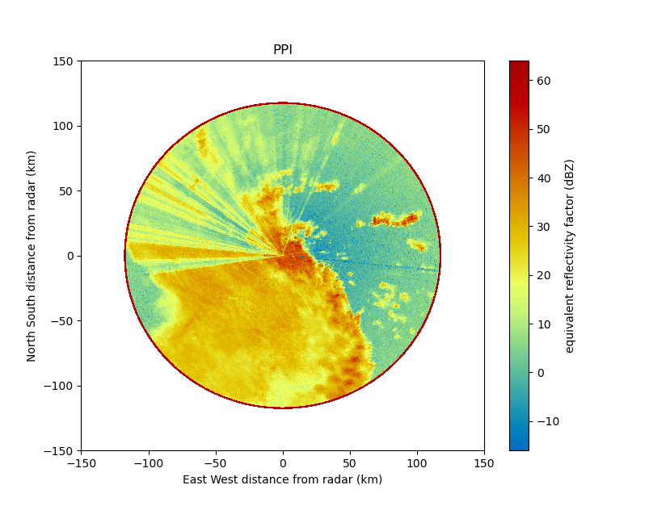

The Python ARM Radar Toolkit - Py-ART#
Radar Cookbook
The cookbook provides in-depth information on how to use Py-ART (and other open radar packages), including how to get started. This is where to look for general conceptual descriptions on how to use parts of Py-ART, like its support for corrections and gridding.
Reference Guide
The reference guide contains detailed descriptions on every function and class within Py-ART. This is where to turn to understand how to use a particular feature or where to search for a specific tool
Developer Guide
Want to help make Py-ART better? Found something that’s not working quite right? You can find instructions on how to contribute to Py-ART here. You can also find detailed descriptions on tools useful for developing Py-ART.
Example Gallery
Check out Py-ART’s gallery of examples which contains sample code demonstrating various parts of Py-ART’s functionality.
What is Py-ART?#
The Python ARM Radar Toolkit, Py-ART, is a Python module containing a collection of weather radar algorithms and utilities. Py-ART is used by the Atmospheric Radiation Measurement (ARM) Climate Research Facility for working with data from a number of its precipitation and cloud radars, but has been designed so that it can be used by others in the radar and atmospheric communities to examine, processes, and analyze data from many types of weather radars.
Citing Py-ART#
If you use Py-ART in your work please cite it in your paper. While the developers appreciate mentions in the text and acknowledgements citing the paper helps more.
For Py-ART cite our paper in the Journal of Open Research Software
Helmus, J.J. & Collis, S.M., (2016). The Python ARM Radar Toolkit (Py-ART), a Library for Working with Weather Radar Data in the Python Programming Language. Journal of Open Research Software. 4(1), p.e25. DOI: http://doi.org/10.5334/jors.119
For a general citation on Open Radar Software please cite Maik Heistermann in BAMS
M. Heistermann, S. Collis, M. J. Dixon, S. Giangrande, J. J. Helmus, B. Kelley, J. Koistinen, D. B. Michelson, M. Peura, T. Pfaff, and D. B. Wolff, 2015: The Emergence of Open-Source Software for the Weather Radar Community. Bull. Amer. Meteor. Soc. 96, 117–128, doi: 10.1175/BAMS-D-13-00240.1.
What can Py-ART do?#
Py-ART has the ability to ingest (read) from a number of common weather radar formats including Sigmet/IRIS, MDV, CF/Radial, UF, and NEXRAD Level II archive files. Radar data can be written to NetCDF files which conform to the CF/Radial convention.
Py-ART also contains routines which can produce common radar plots including PPIs and RHIs.


Algorithms in the module are able to performs a number of corrections on the radar moment data in antenna coordinate including attenuation correction of the reflectivity, velocity dealiasing, and correction of the specific (Kdp) and differential (PhiDP) phases.
A sophisticated mapping routines is able to efficiently create uniform Cartesian grids of radar fields from one or more radars. Routines exist in Py-ART for plotting these grids as well as saving them to NetCDF files.
Short Courses#
Various short courses on Py-ART and open source radar software have been given which contain tutorial like materials and additional examples.
Install#
The easiest method for installing Py-ART is to use the conda packages from the latest release and use Python 3, as Python 2 support ended January 1st, 2020 and many packages including Py-ART no longer support Python 2. To do this you must download and install Anaconda or Miniconda. With Anaconda or Miniconda install, it is recommended to create a new conda environment when using Py-ART or even other packages. To create a new environment based on the environment.yml:
conda env create -f environment.yml
Or for a basic environment and downloading optional dependencies as needed:
conda create -n pyart_env -c conda-forge arm_pyart
Basic command in a terminal or command prompt to install the latest version of Py-ART:
conda install -c conda-forge arm_pyart
To update an older version of Py-ART to the latest release use:
conda update -c conda-forge arm_pyart
If you do not wish to use Anaconda or Miniconda as a Python environment or want to use the latest, unreleased version of Py-ART clone the git repository or download the repositories zip file and extract the file. Then run:
$ python setup.py install
Additional detail on installing Py-ART can be found in the installation section.
Dependencies#
Py-ART is tested to work under Python 3.9, 3.10, 3.11, and 3.12.
The required dependencies to install Py-ART in addition to Python are:
A working C/C++ compiler is required for some optional modules. An easy method to install these dependencies is by using a Scientific Python distributions. Anaconda Compilers will install all of the above packages by default on Windows, Linux and Mac computers and is provided free of charge by Anaconda. Anaconda also has their own compilers, which may be required for optional dependencies such as CyLP. These compilers can be found here: https://docs.conda.io/projects/conda-build/en/latest/resources/compiler-tools.html
Optional Dependences#
The above Python modules are require before installing Py-ART, additional functionality is available of the following modules are installed.
TRMM Radar Software Library (RSL). If installed Py-ART will be able t`o read in radar data in a number of additional formats (Lassen, McGill, Universal Format, and RADTEC) and perform automatic dealiasing of Doppler velocities. RSL should be install prior to installing Py-ART. The environmental variable RSL_PATH should point to the location where RSL was installed if RSL was not installed in the default location (/usr/local/trmm), such as a anaconda path (/usr/anaconda3/envs/pyart_env/.
In order to read files which are stored in HDF5 files the h5py package and related libraries must be installed.
A linear programming solver and Python wrapper to use the LP phase processing method. CyLP is recommended as it gives the fastest results, but PyGLPK and CVXOPT are also supported. The underlying LP solvers CBC or GLPK will also be required depending on which wrapper is used. When using CyLP a path to coincbc is needed by setting the COIN_INSTALL_DIR path, such as (/usr/anaconda3/envs/pyart_env/).
Cartopy. If installed, the ability to plot grids on geographic maps is available.
xarray. If installed, gives the ability to work with the grid dataset used in grid plotting.
Basemap. If installed, also gives the ability to plot grids on geographic maps, but Cartopy is recommended over Basemap.
wradlib. Needed to calculate the texture of a differential phase field.
pytest. Required to run the Py-ART unit tests.
gdal. Required to output GeoTIFFs from Grid objects.
Getting help#
Py-ART has a mailing list where you can ask questions and request help.
Contributing#
Py-ART is an open source software package distributed under the New BSD License Source code for the package is available on GitHub. Feature requests and bug reports can be submitted to the Issue tracker, posting to the pyart-users mailing list. Contributions of source code, documentation or additional example are always appreciated from both developers and users. To learn more on contributing to Py-ART, see the contributor’s guide.